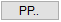
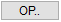
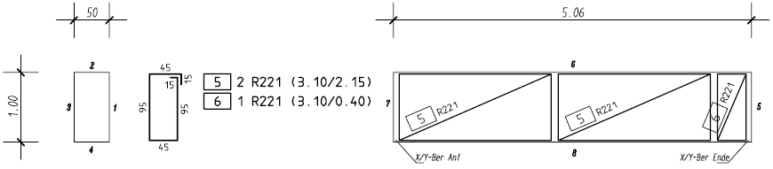
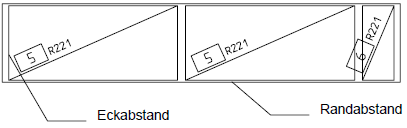

")

Alternativ: Mittlere Maustaste auf Formmatte
Formmatten in Staffeldarstellung verlegen.
ISBCAD führt Sie automatisch durch die benötigten Arbeitsschritte/Funktionen, beginnend mit der Auswahl einer Biegeform [WähFor]. Im Funktionsbereich wird jeweils die entsprechende Schaltfläche aktiviert.
» Biegeform auswählen und ausrichten [WähFor]
» Mattentyp- und abstand angeben [Typ/ab]
» Verlegebereich definieren [BerDef]
Wenn eine Verlegung ein weiteres Mal dargestellt und mit einer bereits vorhandenen Verlegung verknüpft werden soll, wählen Sie [VKN ein]. Eine nachträgliche Verknüpfung bzw. Aufhebung ist möglich. Siehe: Verknüpfung bearbeiten
Führen Sie einen der folgenden Schritte aus:
a)Wählen Sie Vkn an, wenn Sie die Verlegung mit einer anderen Verlegung mit derselben Form verknüpfen wollen. Klicken Sie die Verlegung an. [Welche Verlegung].
b)Wählen Sie Vkn aus, wenn Sie die Form nicht verknüpfen wollen. [Welche Form].
§Klicken Sie die gewünschte Biegeform, einen Auszug oder eine Verlegung dieser Biegeform an oder geben Sie eine in der Zeichnung vorhandene Positionsnummer ein. Bestätigen Sie mit der Eingabetaste. [Welche Form?].
Die gewählte Biegeform wird an den Mauszeiger gehängt.
§Setzen Sie die Biegeform per Mausklick an einer beliebigen Stelle in der Zeichnung ab. [Form setzen].
2.Teillängen wählen
Abhängig von der gewählten Biegeform. Gegebenenfalls wird die Abfrage übersprungen.
§Wählen Sie unter Teillänge(n), welche Teillängen dargestellt werden sollen:
|
Darstellung einer Teillänge. §Klicken Sie die gewünschte Teillänge an der abgesetzten Biegeform an. |
|
Darstellung mehrerer Teillängen. §Klicken Sie die gewünschten Teillängen an und bestätigen Sie die Auswahl durch Rechtsklick. |
|
Stellt die ganze Form mit allen Teillängen dar. |
Korrektur der Auswahl. |


3.Auszugsform ausrichten
§Um die Auszugsform zu drehen:
Verwenden Sie die Optionen unter Dreh-Winkel oder geben Sie die Drehung in Grad (entgegen der Uhrzeigerrichtung) ein und bestätigen Sie mit der Eingabetaste.
Die Auszugsform wird am Cursor als Vorschau angehängt. Wenn Sie die Position der Auszugsform beibehalten möchten, drücken Sie mit der Eingabetaste oder klicken Sie die rechte Maustaste.
Optionen:
|
Auszugsform parallel zu einem Bezugselement ausrichten. §Klicken Sie die Ausrichtungsoption an, um diese in die Eingabe zu übernehmen und klicken Sie anschließend das Bezugselement an. Bestätigen Sie mit Rechtsklick Die Auszugsform wird parallel zum angeklickten Zeichenelement ausgerichtet. |
||||||||||||
|
Auszugsform orthogonal zu einem Bezugselement ausrichten. §Klicken Sie die Ausrichtungsoption an, um diese in die Eingabe zu übernehmen und klicken Sie anschließend das Bezugselement an. Bestätigen Sie mit Rechtsklick Die Auszugsform wird orthogonal zum angeklickten Zeichenelement ausgerichtet. |
||||||||||||
 |
Auszugsform über eine Teillänge parallel zu einem Bezugselement ausrichten. Sie können die gesamte Auszugsform durch Anklicken von Anfangs- und/oder Endpunkten an einer Bezugslinie ausrichten. Je nachdem, ob Sie die Teillänge und Bezugslinie am Anfangs- oder Endpunkt anklicken, wird die Form entweder gegen oder im Uhrzeigersinn gedreht. Hierbei entspricht der Anfangspunkt dem geringeren und der Endpunkt dem höheren X und/oder Y-Wert in Bezug auf den Koordinatenursprung (0 / 0).
Drehen gegen den Uhrzeigersinn
Drehen im Uhrzeigersinn
|
||||||||||||
 |
Auszugsform über eine Teillänge orthogonal zu einem Bezugselement ausrichten. Entspricht der Funktion PP..., nur das hier die Form zusätzlich um 90° gedreht wird. |


§Geben Sie die Winkel Spiegelachse ein oder nutzen Sie die unter der Abfrage stehenden Konstruktionshilfen. [Winkel Spiegelachse].
Die Spiegelachse wird entgegen dem Uhrzeigersinn gedreht.
–(Voreinstellung): Keine Spiegelung;
–0°: Auszugsform wird nach oben gespiegelt; 90°: Auszugsform wird nach links gespiegelt.
§Geben Sie die Winkel Projektionsachse ein oder nutzen Sie die unter der Abfrage stehenden Konstruktionshilfen. [Winkel Projektionsachse].
4.Mattentyp- und abstand angeben [Typ/ab]
§Geben Sie den Mattentyp an. Der Mattentyp muss in der Mattenliste (Matten.dat) enthalten sein. [Mattentyp].
§Geben Sie die fehlende Breite/Länge der Matte ein und bestätigen Sie mit der Eingabetaste. [max. Breite je Matte].
Unter Umständen müssen die Randeinsparungen abgeschnitten werden. Das maximale Maß richtet sich nach der gewählten Biegerichtung. Wenn bei der Biegeform die Biegerichtung 1 = Längsstab angegeben wurde, kann bei der aktuellen Abfrage lediglich die maximale Breite angegeben werden, und bei Querstab die maximale Länge.
§Geben Sie den Abstand oder die Überdeckung ein. Bestätigen Sie mit der Eingabetaste. [Abstand].
Der Abstand wird mit einem positiven Wert eingegeben, die Überdeckung mit einem negativen Wert.
5.Verlegebereich definieren [BerDef]
§Wählen Sie über die Schaltflächen oben links (unter der Abfragezeile) die Art der Verlegung.
Um hintereinander bzw. nebeneinanderliegende Matten in der Verlegung darzustellen, werden die zuvor eingegeben Werte für die weitere Bearbeitung verwendet. Der Verlegebereich wird bei der gezielten Verlegung über die X- und Y-Koordinate des Anfangs- und Endpunktes, mit Bezug auf vorhandene Linien (Kanten), beschrieben. |
|
Der Verlegebereich wird automatisch aus der Länge des Randes ermittelt. Als Rand werden ausschließlich Linien angeklickt. |
|
Freie Definition des Verlegebereiches, ohne exakte Angabe des Anfangs- und Endpunktes des Verlegebereiches. |
Die weiteren Arbeitsschritte sind abhängig von der Art der Bereichsdefinition.
Der Verlegebereich wird über die X- und Y-Koordinate des Anfangs- und Endpunktes beschrieben. Liegt der Anfangs- oder Endpunkt der Staffel an einer schrägen Linie, ist es ratsam, das Arbeitskoordinatensystem zu drehen. Alternativ können Sie auch die Hilfsfunktion S [Schnitt] verwenden, um den Anfangs- und/oder Endpunkt an den Schnittpunkt zweier Linien zu setzen. Tippen Sie in das Eingabefeld ein S ein und klicken Sie anschließend die Bezugslinie an. Mit Rechtsklick können Sie die Betondeckung übernehmen. Wenn Sie bei einem Parameter (X oder Y) für den Anfangs- und/oder Endpunkt die Hilfsfunktion verwenden, achten Sie darauf, auch beim anderen Parameter die Hilfsfunktion einzugeben!
[XBer-Anf]
§Klicken Sie eine Bezugslinie für den Anfangspunkt an.
Falls Sie die voreingestellte Betondeckung [nom c] übernehmen möchten, achten Sie darauf, die Linie mit dem Cursor auf der Seite anzuklicken, zu der die Betondeckung berücksichtigt werden soll.
Die Linienkennung und die voreingestellte Betondeckung werden in die Eingabe geschrieben.
§Geben Sie nach der Linienkennung den Wert für die Betondeckung mit dem entsprechenden Vorzeichen ein und bestätigen Sie mit der Eingabetaste.
Mit Rechtsklick können Sie die voreingestellte Betondeckung übernehmen. Wenn kein Abstand angegeben werden soll, geben Sie als Differenz 0 (Null) ein.
[YBer-Anf]
§Gehen Sie für die Angabe des Y-Wertes wie bei [XBer-Anf] beschrieben vor.
Die Zeichenmarke wird an den Anfangspunkt gesetzt.
[XBer-Ende]; [YBer-Ende]
§Klicken Sie Bezugslinien für den Endpunkt wie bei [XBer-Anf] beschrieben an.
[Breite der Restmatte]
§Geben Sie einen beliebigen Wert ein oder einen Wert, der einer vollen oder halben Mattenbreite bzw. Mattenlänge entspricht.
In der oberen linken Ecke der Zeichnung werden Funktionen eingeblendet, mit denen Sie die Darstellung der Staffel anpassen können.
Klappen |
Spiegelt die Staffel um die Verbindungslinie des Anfangs- und Endpunktes. |
Tausche |
Vertauscht den Anfang und das Ende der Staffel. |
DrehDia |
Vertauscht die Eckpunkte der Diagonalen. |
[Abstandsaufteilung]
§Geben Sie unter der Abfrage an, ob die Differenz auf alle oder auf den letzten Abstand verteilt werden soll.
1 = gleich |
Differenz wird auf alle Abstände verteilt. |
2 = auf Rest |
Differenz wird auf den letzten Abstand verteilt. |
§Bestätigen Sie die Aufteilung mit Rechtsklick.
[Verlege-Faktor (max. 2!)]
Die Angabe des Verlege-Faktors ist für die jeweils erste Verlegung erforderlich. Wenn diese Verlegung in der Stahlliste berücksichtigt werden soll, geben Sie einen Wert ≥1 ein. Handelt es sich um eine Wiederholung einer, an anderer Stelle gezählten, Verlegung, können Sie auch den Wert 0 (Null) eingeben.
§Geben Sie den Verlege-Faktor ein oder klicken Sie einen Wert in der Dropdown-Liste an und bestätigen Sie mit Rechtsklick.
Die Verlegung wird in dem Maßstab gezeichnet, in dem die Geometrie vorliegt, auch wenn für die Auszugsform ein anderer Maßstab gewählt wurde.
Beispiel: Gezielte Verlegung

Der Verlegebereich wird auf eine Linie/Kreis = Rand bezogen.

[Welcher Rand]
§Klicken Sie den Rand auf der Seite an, auf der die Staffel angeordnet werden soll.
Wenn der Rand ein Teilkreis ist, werden die Stäbe erst einmal nach außen ausgerichtet. Diese können Sie später durch [Klappen] nach innen weisend verlegen.
[Randabstand]
§Geben Sie Sie den gewünschten Abstand ein und bestätigen Sie mit der Eingabetaste.
Mit Rechtsklick können Sie die Betondeckung [nom c] übernehmen.
In der oberen rechten Ecke der Zeichnung werden Funktionen eingeblendet, mit denen Sie die Darstellung der Staffel anpassen können.
Klappen |
Spiegelt die Staffel um die Verbindungslinie des Anfangs- und Endpunktes. |
Tausche |
Vertauscht den Anfang und das Ende der Staffel. |
DrehDia |
Vertauscht die Eckpunkte der Diagonalen. |
[Eckab1]; [Eckab2]
Die Eckabstände beziehen sich auf die angeklickte Randlinie und werden zur Linienmitte hin positiv gemessen. Mit negativen Werten wird die Staffel über die Ecke hinaus verlängert.
§Geben Sie die Abstände am Anfang und am Ende ein und bestätigen Sie mit der Eingabetaste.
[Breite der Restmatte]
§Geben Sie einen beliebigen Wert ein oder einen Wert, der einer vollen oder halben Mattenbreite bzw. Mattenlänge entspricht.
[Abstandsaufteilung]
§Geben Sie unter der Abfrage an, ob die Differenz auf alle oder auf den letzten Abstand verteilt werden soll.
1 =gleich |
Differenz wird auf alle Abstände verteilt. |
2 =auf Rest |
Differenz wird auf den letzten Abstand verteilt. |
§Bestätigen Sie die Aufteilung mit Rechtsklick.
[Verlege-Faktor (max. 2!)]
Die Angabe des Verlege-Faktors ist für die jeweils erste Verlegung erforderlich. Wenn diese Verlegung in der Stahlliste berücksichtigt werden soll, geben Sie einen Wert ≥1 ein. Handelt es sich um eine Wiederholung einer, an anderer Stelle gezählten, Verlegung, können Sie auch den Wert 0 (Null) eingeben.
§Geben Sie den Verlege-Faktor ein oder klicken Sie einen Wert in der Dropdown-Liste an und bestätigen Sie mit Rechtsklick.
Die Verlegung wird in dem Maßstab gezeichnet, in dem die Geometrie vorliegt, auch wenn für die Auszugsform ein anderer Maßstab gewählt wurde.
.png)
Freie Definition des Verlegebereiches.
[Staffellänge]
§Geben Sie die Ausdehnung des Bereiches an.
[Verlegemaßstab]
§Geben Sie einen Maßstab ein und bestätigen Sie mit der Eingabetaste oder klicken Sie einen Maßstab in der Dropdown-Liste an.
[Bereichswinkel]
Positiver Wert = Drehung gegen den Uhrzeigersinn; Negativer Wert = Drehung im Uhrzeigersinn. Nutzen Sie ggf. die Ausrichtungsoptionen unterhalb der Abfrage.

|
||||||


§Geben Sie einen Winkel ein, um den die Staffel gedreht werden soll.
§Platzieren Sie die Staffel an der gewünschten Stelle mit Linksklick.
[Breite der Restmatte]
§Geben Sie einen beliebigen Wert ein oder einen Wert, der einer vollen oder halben Mattenbreite bzw. Mattenlänge entspricht.
Unter der Abfrage werden nach dem Absetzen der Staffel Funktionen eingeblendet, mit denen Sie die Darstellung der Staffel anpassen können.
Klappen |
Spiegelt die Staffel um die Verbindungslinie des Anfangs- und Endpunktes. |
Tausche |
Vertauscht den Anfang und das Ende der Staffel. |
DrehDia |
Vertauscht die Eckpunkte der Diagonalen. |
[Abstandsaufteilung]
§Geben Sie unter der Abfrage an, ob die Differenz auf alle oder auf den letzten Abstand verteilt werden soll.
1 =gleich |
Differenz wird auf alle Abstände verteilt. |
2 =auf Rest |
Differenz wird auf den letzten Abstand verteilt. |
§Bestätigen Sie die Aufteilung mit Rechtsklick.
[Verlege-Faktor (max. 2!)]
Die Angabe des Verlege-Faktors ist für die jeweils erste Verlegung erforderlich. Wenn diese Verlegung in der Stahlliste berücksichtigt werden soll, geben Sie einen Wert ≥1 ein. Handelt es sich um eine Wiederholung einer, an anderer Stelle gezählten, Verlegung, können Sie auch den Wert 0 (Null) eingeben.
§Geben Sie den Verlege-Faktor ein oder klicken Sie einen Wert in der Drop-Down-Liste an und bestätigen Sie mit Rechtsklick.
Die Verlegung wird in dem Maßstab gezeichnet, in dem die Geometrie vorliegt, auch wenn für die Auszugsform ein anderer Maßstab gewählt wurde.